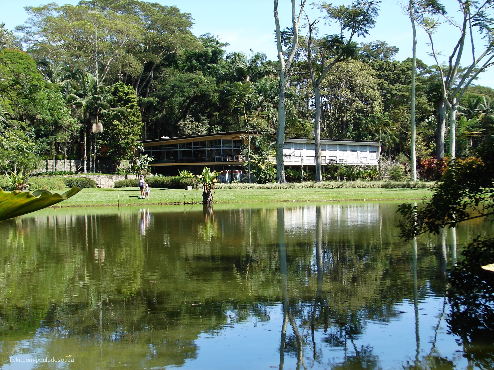

Parque da Cidade Roberto Burle Marx
Paisagismo e arquitetura moderna
O Parque da Cidade é a maior área verde da região urbana de São José dos Campos, com quase 1 milhão de metros quadrados. Fez parte da antiga Fazenda da Tecelagem Parahyba.
Tem jardins assinados por Roberto Burle Marx, a Residência Olivo Gomes, projetada por Rino Levi, lagos, palmeiras imperiais e o Museu do Folclore. É um conjunto tombado como patrimônio histórico e paisagístico.
Endereço: Avenida Olivo Gomes, 100, Santana. Confirme os horários de funcionamento antes de visitar.
